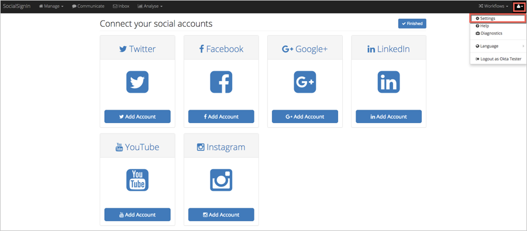
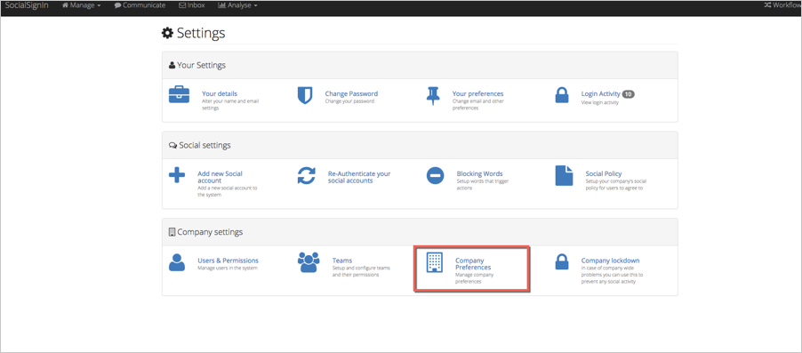
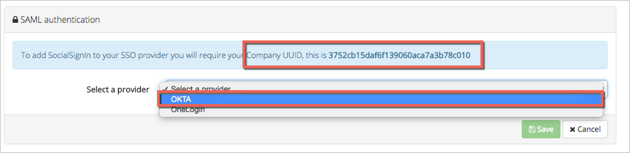

Log in to your SocialSignIn account as an administrator.
Click the account icon at the top right of the screen, then select Settings from the drop down menu:

On the Settings page, select Company Preferences.

On the Company Preferences page, scroll to the SAML Authentication section.
Make sure the value for Company UUID is saved in the Okta app (you can find it by selecting the General tab for the SocialSignIn app in Okta).
For Select a provider: Select Okta from the dropdown list.

Enter the following information:
Identity provider issuer: Copy and paste the following:
Sign into the Okta Admin Dashboard to generate this variable.
SAML 2.0 endpoint (HTTP): Copy and paste the following:
Sign into the Okta Admin Dashboard to generate this variable.
Public certificate: Cut and paste the following in PEM Text Format:
Sign into the Okta Admin Dashboard to generate this variable.
Click Save.

Done!
Notes:
IdP-initiated flows are supported.
SP-initiated flows and Just In Time (JIT) provisioning are not supported.